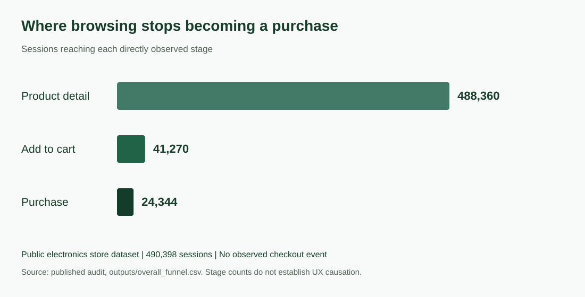

Product & UX analytics · Public dataset analysis
Find where browsing stops becoming a purchase
In a public electronics store dataset, most measurable loss occurred before cart intent. The audit separates that finding from checkout behaviour and proposes specific UX checks.
- Contribution
- Mehrab Mashrafi
- Scope
- Session analysis, funnel definitions, statistics and modelling
- Project context
- Historical clickstream analysis

Analysed sample
490,398 sessions
Aggregated from 884,964 cleaned events in a public historical dataset.
Product detail sessions reaching cart
8.45%
A stage conversion rate. The corresponding loss before cart is 91.55%, not an 8.45% drop off.
Define what the events actually show
The source records views, cart events and purchases. Mehrab cleaned and grouped events into sessions, then compared journeys by category, product and behavioural segment.
Cart behaviour is the measurable purchase intent stage. The source preparation reuses the cart flag as a checkout intent proxy for its generic analysis pipeline. It records no separate checkout event, so it cannot identify where checkout itself failed or explain why an individual left.
Give the product team a place to start checking
The largest measured loss came between product detail and cart. Category comparisons helped identify where navigation and product information deserved review.
A propensity model explored high intent non buyers. It offers a review queue and testable hypotheses, not proof of increased purchases. Usability research and controlled changes would be next.
A concrete next check is whether important product information is missing or hard to compare on the product page. Another is whether items in the unknown category need clearer taxonomy. Each hypothesis would be checked with observation or a controlled test before claiming an improvement.
How the work connects
- 01
Clickstream events
- 02
Cleaned sessions
- 03
Defined funnel stages
- 04
Segment comparisons
- 05
UX review priorities
What this work establishes
8.45% of product detail sessions added to cart; 58.99% of sessions with cart intent reached purchase. These findings prioritise investigation, not an achieved conversion lift.
This is a historical public dataset audit, not changes made to a client’s store. Its relationships and model results do not establish causal UX improvements or future conversion performance.
Inspect the work or discuss the approach
What would make your team’s work easier?
Tell me who uses the workflow, which records it depends on and where the handoff slows down.
Discuss your use case Email meProject notes by Mehrab Mashrafi. Updated .